お花のキーホルダーを作ろう
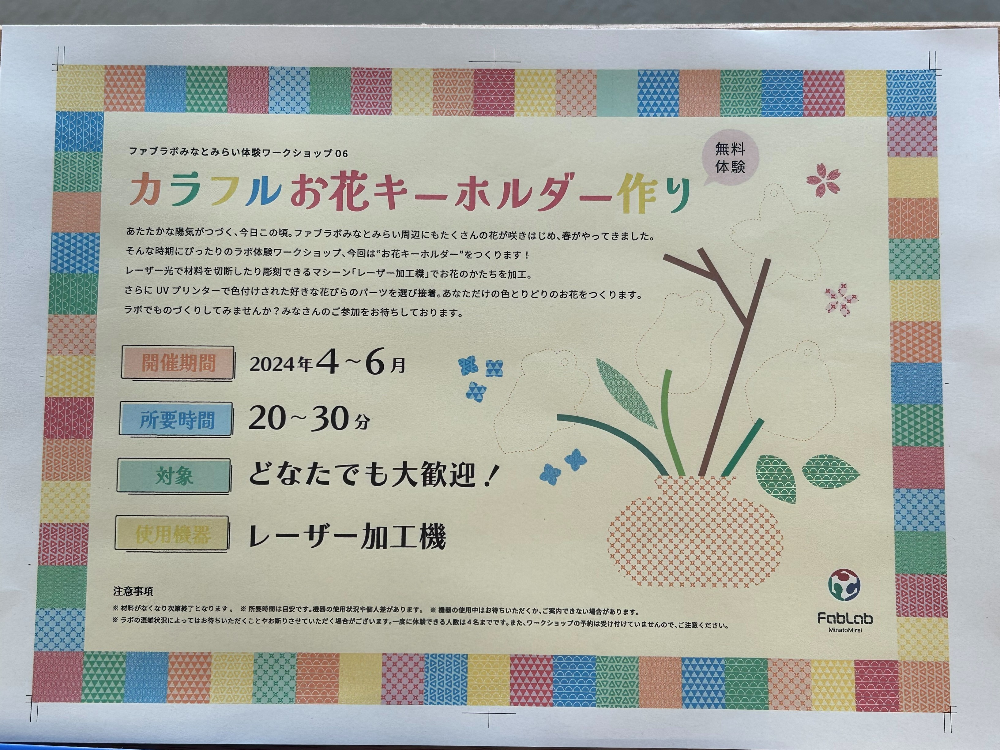
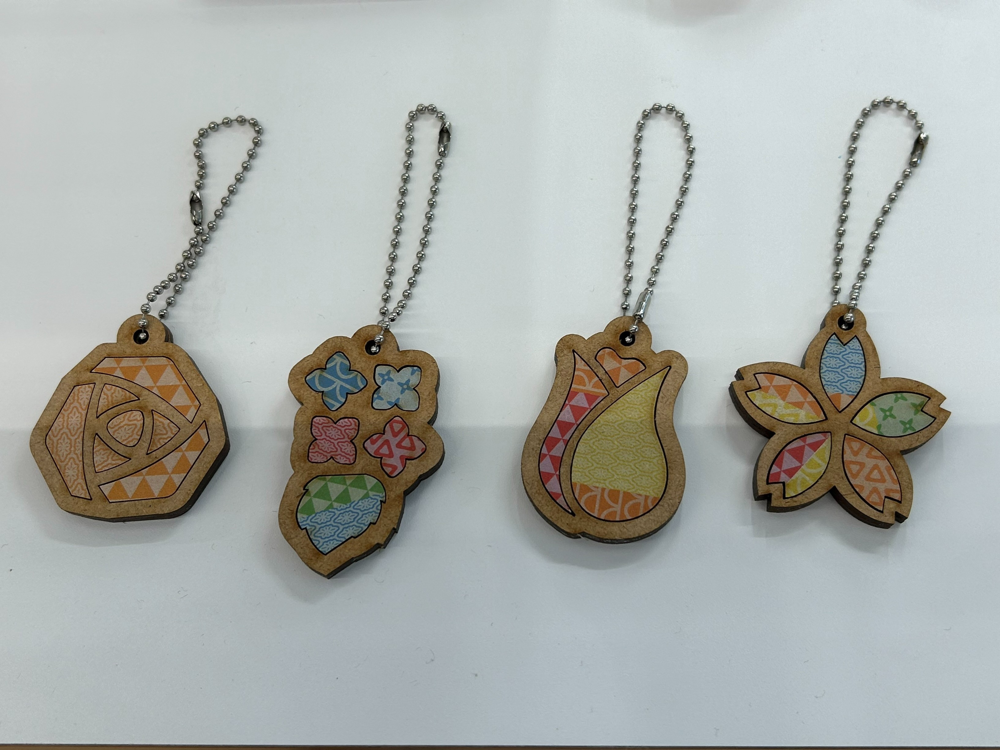
難易度：★☆☆☆☆ 学べること：レーザーカッター、UVプリンター
使用機材：MDF2.5mm、レーザーカッター、UVプリンター、イラストレーター
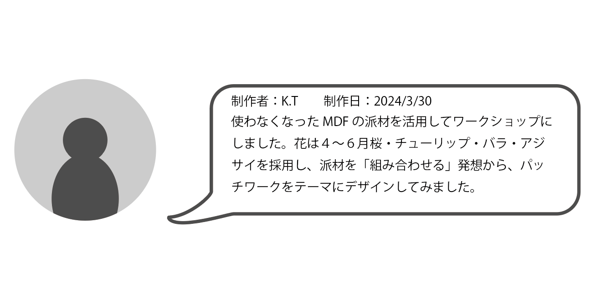
制作手順
1.MDFをレーザーでカットする
無料で使える派材ゾーンから2.5mmのMDFを使い、レーザーでカットする。
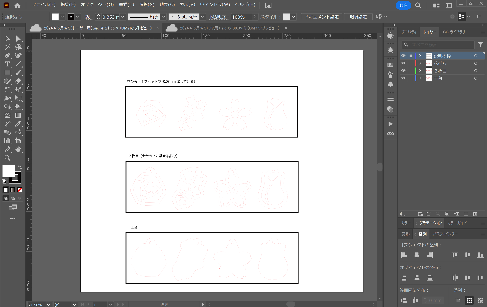
→※ここでイラレのデータを載せたい
レーザーの使い方
2.UVで印刷する
カットした花びらをUVで印刷する
→※ここでイラレのデータを載せたい
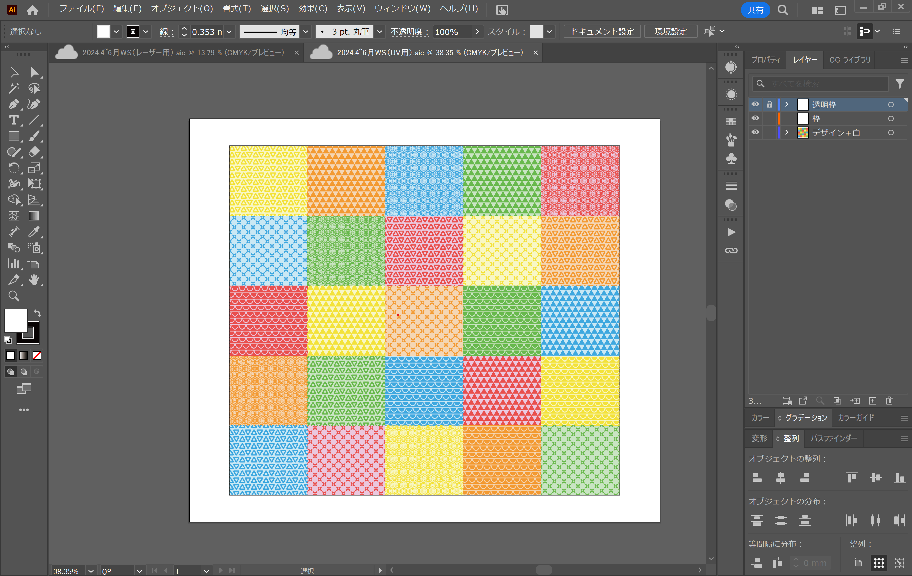
3.花びらを土台に載せて完成
体験者の作品
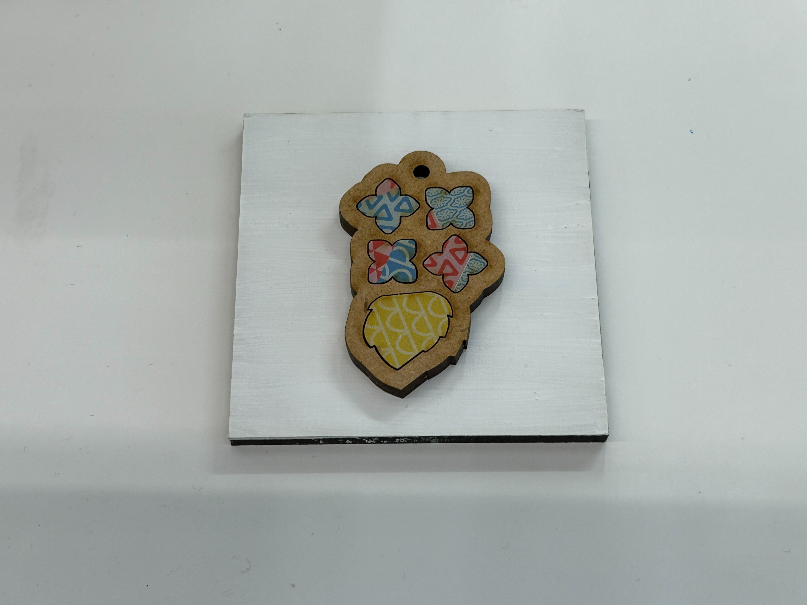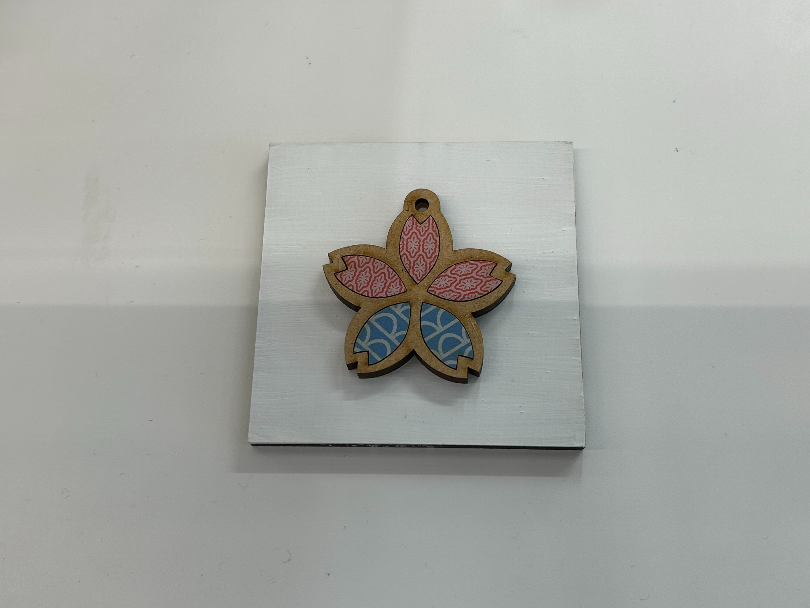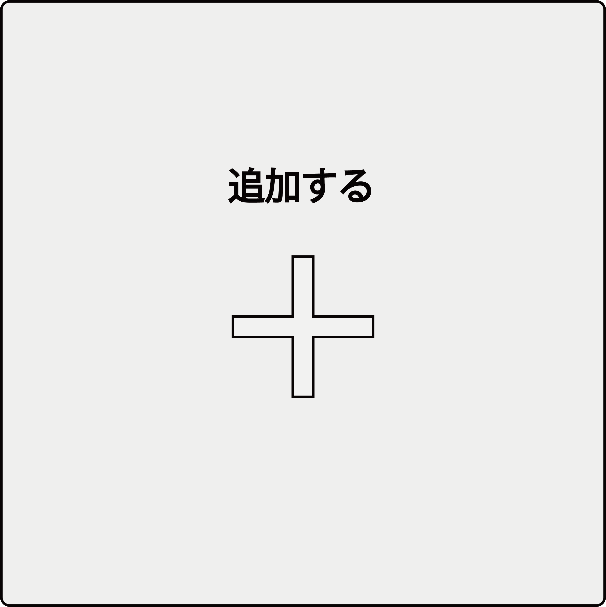
別素材で作ってみた
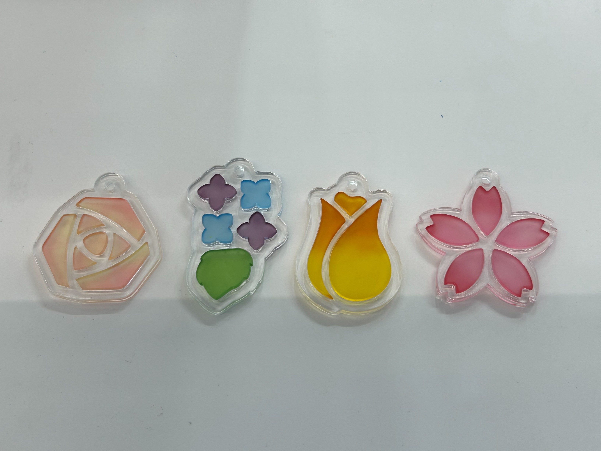
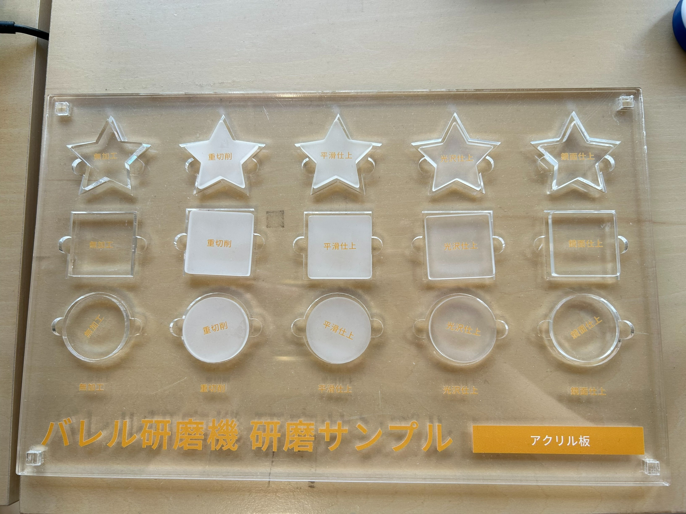
難易度：★★☆☆☆ 学べること：レーザーカッター、染色、バレル研磨
使用機材：アクリル、レーザーカッター、バレル研磨、染色、イラストレーター
制作手順
.........
体験者の作品
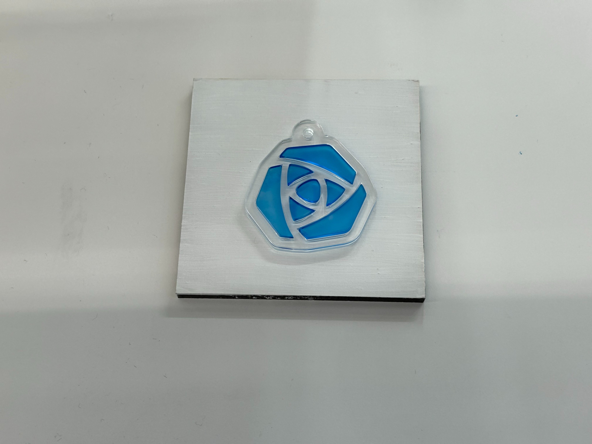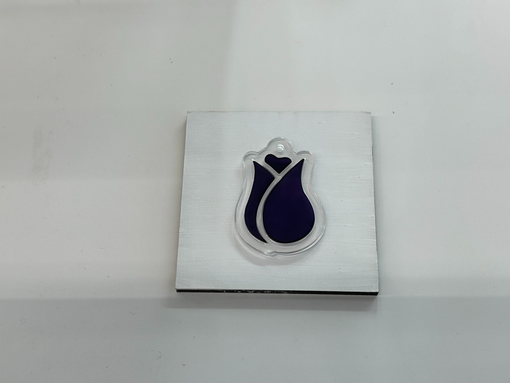